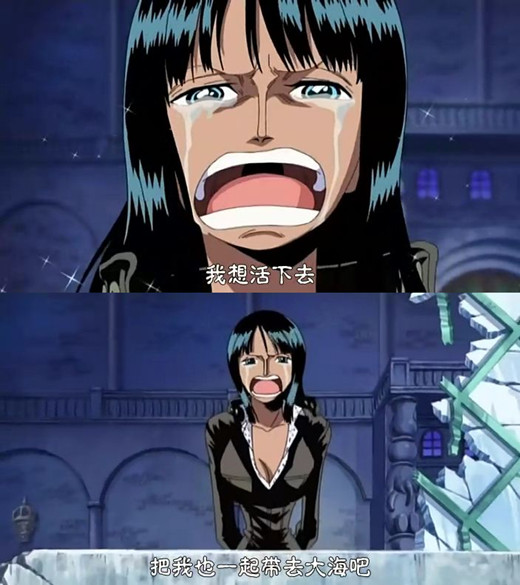
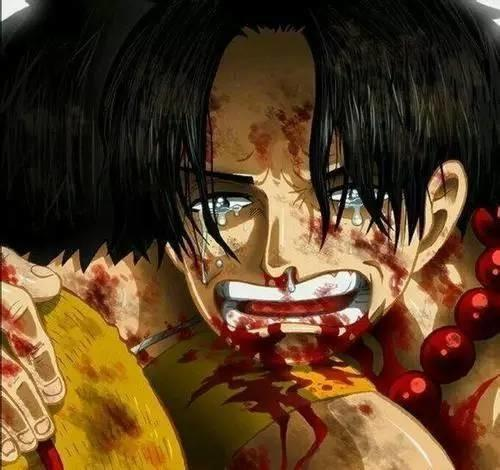
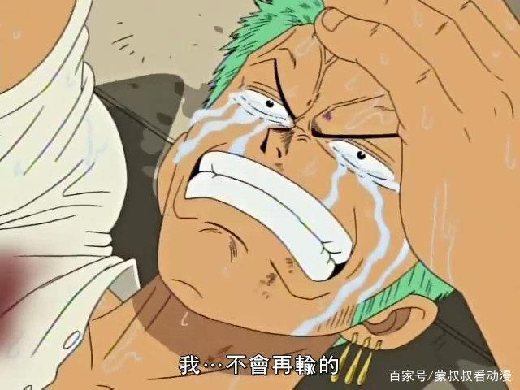
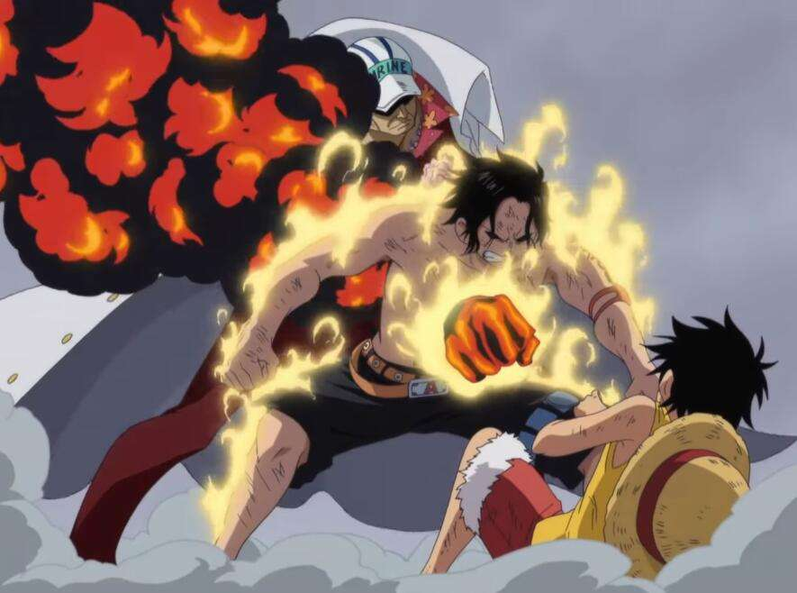
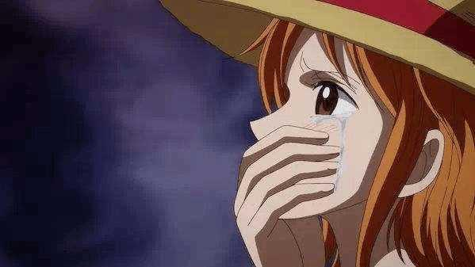
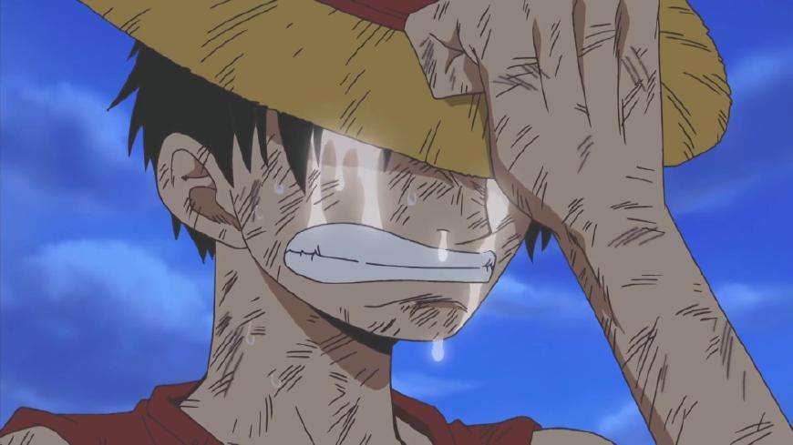
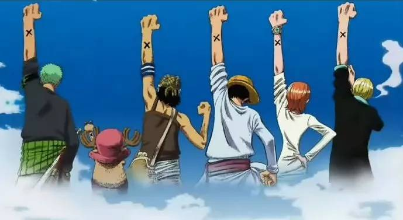
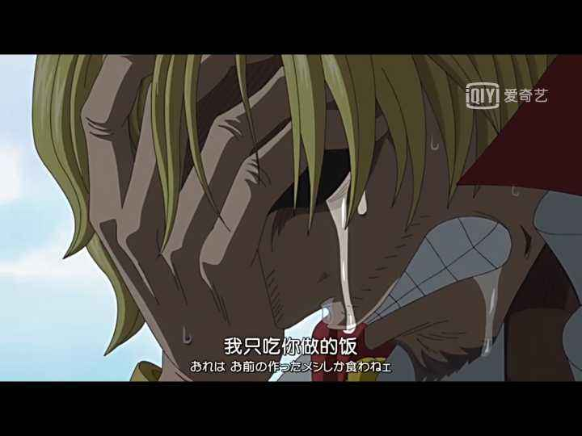
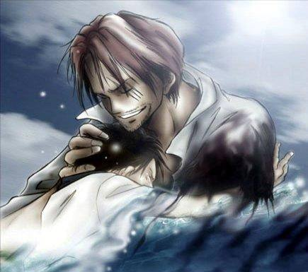

| 首页 |  | 个人感想 |
| 作品简介 | ||
| 故事背景 | ||
| 角色介绍 | ||
| 剧情介绍 | ||
| 作品评价 |
被这部动漫感动得哭的地方有太多。第一次是在索隆被鹰眼打的时候，鹰眼刺向了索隆的心脏，索隆没躲说了一句话：“感觉如果现在放弃，那以前那些重要的誓言、约定都会消失不见的。”鹰眼开始欣赏他，拿出黑刀，索隆知道自己已经输了，他说了一句话：“背后中剑是剑士的耻辱。”最后索隆哭着对路飞说：在赢这个家伙之前，我再也不会输了，你有异议么?海贼王!在鹰眼压倒性的实力面前，索隆输了，且输得彻底。路飞一直控制着没插手这场决斗，这是尊重索隆的梦想。所以索隆给路飞这样的承诺，也是对自己对路飞梦想的尊重。一个人首先要尊重自己的梦想，理解了自己的梦想，才能实现自己的梦想。 山治和他师傅间超越血缘的师徒之情让人印象深刻。其实这种平时互不买账、内心却互相理解和关爱的感情才真的令人向往啊!当山治给他师傅跪下告别时，再次印证了一个定律：外表轻浮的人往往都有最珍惜的感情。 山治的梦想是找到allblue，有很多人嘲笑他，但是他仍然坚信自己的梦想，他眉飞色舞谈起自己梦想的时候真的很帅。 梦想在这部动漫中有太多诠释的地方。最能体现梦想是要靠自己追逐，即使遥不可及，即使别人如何笑话但只要自己不放弃终能成功的就是空岛篇了。弹簧果实贝拉米笑话路飞要去空岛冒险的梦想，路飞和索隆任他打没有还手，这是对他的怜悯，一个连梦想都没有的人，还有出手的必要吗?而最后路飞敲响黄金钟向地面的菱形大叔证实空岛的存在!同时也是对400年前大战士卡尔加拉和冒险家罗兰度友谊的证明。 火烧梅丽那段真的很感人，梅丽在他们眼中不单单是一艘船更是一位伙伴，他们这次是对伙伴的诠释。当看到草帽一伙在司法岛走投无路时，梅利号来接大家回家。获救后，路飞趴在羊头上说：“谢谢你，梅利!多亏了你我们才能逃出来。真没想到梅利会来救我们，想想看我们一直以来被你保护着，有你这样一个伙伴真的太好了。谢了，梅利!”但没想到的是在到达安全地方后，梅利断裂了。草帽一伙难以置信，路飞求着冰山，求他救救梅利“梅利是一直陪着我们冒险的伙伴啊!”但最后梅利只能葬身冰冷的海底路飞举着火把亲手送走梅利!对于梅利来说梅利是幸福的因为有草帽一伙的陪伴珍惜。但对于草帽一伙是无奈的、难过的、不舍的。伴随着音乐，熊熊的火光，飘落的雪花，眼泪再也忍不住。梅利你虽然走了，但你永远留在草帽一伙的心中，我们的记忆里。人生总会有失去的不得不放下的人，但最后我们都会笑着祝福。而我们能保留的不正是那些美好的回忆吗? 这样一部动漫里描写友情的地方太多。MR.2曾说过一句：海上的涟漪，乃我为你们盛开的友谊之花。MR.2在《海贼王》中也是个让人记忆深刻的人，不单单因为他是人妖，不单单因为他曾是敌人。而是因为知道敌人后，还能做朋友，还能为路飞牺牲。路飞身中剧毒的时候，MR.2喊加油，喊得嗓子都哑了。MR.2为了大家能顺利走出海底大监狱而毅然牺牲自己!这样可爱的人，我们能不为之感动吗，能不为之流泪吗?所以这一部描写梦想，友情的动漫能不让我为之折服吗。这部集热血、冒险、搞笑于一身的动漫真的值得海迷的追逐! 艾斯死的那段我相信很多人都哭了，艾斯第一次出场是在沙漠中，他那灿烂的笑容我至今记忆犹新，对于路飞他很担心，担心那个弟弟死掉，同时他也十分疼爱路飞，记得他还拿着弟弟的悬赏令对着白胡子说：“看，这是我弟弟。”想必那时的他心里十分骄傲呢。最后他为了保护路飞死了，我相信他心中是甘愿的吧。 |
|
| 个人感想 | ||
| 彩蛋 | ||